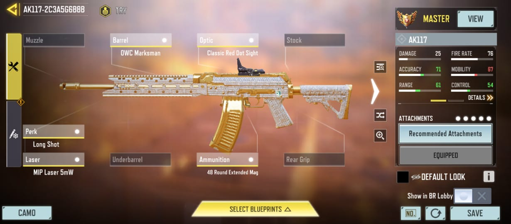

AK117 – Balanced AR Slayer
A fast-firing assault rifle perfect for aggressive plays. Excellent for close to mid-range skirmishes with low recoil and quick ADS — ideal for fast-paced domination or TDM matches.
A fast-firing assault rifle perfect for aggressive plays. Excellent for close to mid-range skirmishes with low recoil and quick ADS — ideal for fast-paced domination or TDM matches.
A devastating one-shot shotgun up close. Great for players who like to rush tight corridors and take enemies down with raw stopping power. Best used with lightweight and agile perks.
The fastest fire rate in CODM — built for close-range chaos. Perfect for objective rushers and aggressive flanks. Equip extended mags and tighten that hipfire spread for max carnage.
The sniper of choice for quickscopers. Reliable, hard-hitting, and perfect for long-range picks. Combine with a fast ADS scope and agility perks for dominating across open maps.
A semi-automatic shotgun that melts enemies at close range. Great for holding objectives and clearing rooms. Pair it with a suppressor and extended mag for maximum surprise and sustain.
This break-action shotgun hits like a truck. With its tight pellet spread and high damage, it's a favorite for skilled players who can make each shot count. Add mobility mods to stay light on your feet.